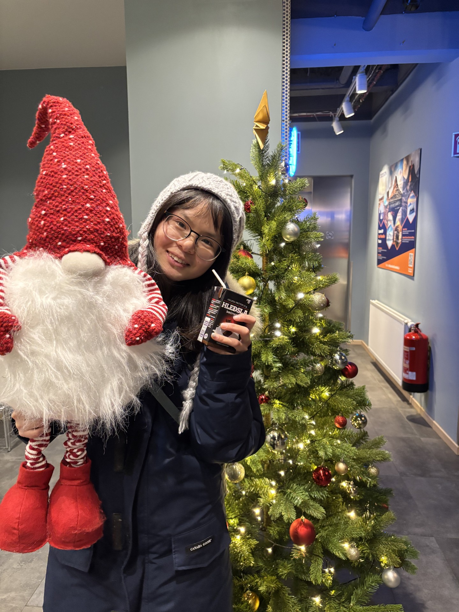

Shengnan(Anio) Zhang(Parker)
I am a graduate student at the Helping Hands Lab at Northeastern University (NEU), working under the supervision of Prof. Robert Platt.
My research focuses on robot manipulation and perception, with an emphasis on optimizing reinforcement learning and machine learning models through efficient algorithms and use of VLMs.
My journey in research and science began at Northeastern University.
Anyone who has never made a mistake, has never tried anything new. ' - Albert Einstein.
